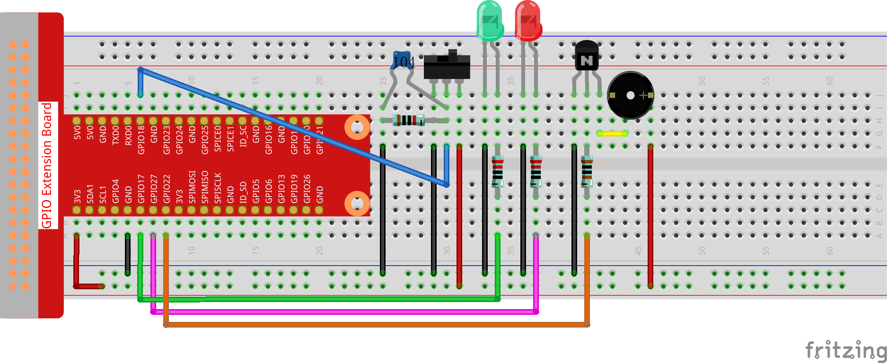

Nota
¡Hola! Bienvenido a la comunidad de entusiastas de SunFounder para Raspberry Pi, Arduino y ESP32 en Facebook. Únete para profundizar en Raspberry Pi, Arduino y ESP32 junto a otros apasionados.
¿Por qué unirte?
Soporte de Expertos: Resuelve problemas post-venta y desafíos técnicos con la ayuda de nuestra comunidad y equipo.
Aprende y Comparte: Intercambia consejos y tutoriales para mejorar tus habilidades.
Avances Exclusivos: Obtén acceso anticipado a anuncios de nuevos productos y vistas previas.
Descuentos Especiales: Disfruta de descuentos exclusivos en nuestros productos más recientes.
Promociones Festivas y Sorteos: Participa en sorteos y promociones de temporada.
👉 ¿Listo para explorar y crear con nosotros? Haz clic en [Aquí] y únete hoy.
3.1.10 Alarma
Introducción
En este curso, vamos a crear un dispositivo de alarma manual. Puedes reemplazar el interruptor de palanca con un termistor o un sensor fotosensible para hacer una alarma de temperatura o de luz.
Componentes

Diagrama Esquemático
T-Board Name |
physical |
wiringPi |
BCM |
GPIO17 |
Pin 11 |
0 |
17 |
GPIO18 |
Pin 12 |
1 |
18 |
GPIO27 |
Pin 13 |
2 |
27 |
GPIO22 |
Pin 15 |
3 |
22 |

Procedimientos Experimentales
Paso 1: Construye el circuito.
{kind=link}
Para Usuarios de Lenguaje C
Paso 2: Cambia de directorio.
cd ~/davinci-kit-for-raspberry-pi/c/3.1.10/
Paso 3: Compila.
gcc 3.1.10_AlarmBell.c -lwiringPi -lpthread
Paso 4: Ejecuta.
sudo ./a.out
Después de iniciar el programa, el interruptor de palanca se moverá hacia la derecha, y el zumbador emitirá sonidos de alarma. Al mismo tiempo, los LED rojo y verde parpadearán a una cierta frecuencia.
Nota
Si no funciona después de ejecutarlo, o aparece un mensaje de error: "wiringPi.h: No such file or directory», consulta c code is not working?.
Explicación del Código
#include <pthread.h>
En este código, se usa una nueva biblioteca, pthread.h, que es un conjunto de bibliotecas de hilos comunes y permite la implementación de multihilos. Añadimos el parámetro -lpthread al momento de la compilación para que el LED y el zumbador funcionen de manera independiente.
void *ledWork(void *arg){
while(1)
{
if(flag==0){
pthread_exit(NULL);
}
digitalWrite(ALedPin,HIGH);
delay(500);
digitalWrite(ALedPin,LOW);
digitalWrite(BLedPin,HIGH);
delay(500);
digitalWrite(BLedPin,LOW);
}
}
La función ledWork() se encarga de configurar el estado de funcionamiento de estos 2 LEDs: mantiene el LED verde encendido durante 0,5 s y luego se apaga; de manera similar, mantiene el LED rojo encendido durante 0,5 s y luego se apaga.
void *buzzWork(void *arg){
while(1)
{
if(flag==0){
pthread_exit(NULL);
}
if((note>=800)||(note<=130)){
pitch = -pitch;
}
note=note+pitch;
softToneWrite(BeepPin,note);
delay(10);
}
}
La función buzzWork() se utiliza para configurar el estado de funcionamiento del zumbador. Aquí establecemos la frecuencia entre 130 y 800, acumulando o decayendo en intervalos de 20.
void on(){
flag = 1;
if(softToneCreate(BeepPin) == -1){
printf("setup softTone failed !");
return;
}
pthread_t tLed;
pthread_create(&tLed,NULL,ledWork,NULL);
pthread_t tBuzz;
pthread_create(&tBuzz,NULL,buzzWork,NULL);
}
En la función on():
Definimos la marca «flag=1», lo que indica el fin del hilo de control.
Creamos un pin de tono controlado por software BeepPin.
Creamos dos hilos independientes para que el LED y el zumbador puedan funcionar al mismo tiempo.
pthread_t tLed: Declara un hilo tLed.
pthread_create(&tLed,NULL,ledWork,NULL): Crea el hilo, y su prototipo es el siguiente:
int pthread_create(pthread_t restrict tidp,const pthread_attr_t *restrict_attr, void*（*start_rtn)(void),void *restrict arg);
Retorno del Valor
Si tiene éxito, devuelve «0»; de lo contrario, devuelve el número de error «"-1"».
Parámetros
void off(){
flag = 0;
softToneStop(BeepPin);
digitalWrite(ALedPin,LOW);
digitalWrite(BLedPin,LOW);
}
La función off() define "flag=0" para salir de los hilos ledWork y buzzWork y luego apaga el zumbador y los LED.
int main(){
setup();
int lastState = 0;
while(1){
int currentState = digitalRead(switchPin);
if ((currentState == 1)&&(lastState==0)){
on();
}
else if((currentState == 0)&&(lastState==1)){
off();
}
lastState=currentState;
}
return 0;
}
Main() contiene todo el proceso del programa: primero lee el valor del interruptor deslizante; si el interruptor se cambia a la derecha (la lectura es 1), se llama a la función on(), el zumbador emite sonidos y los LED rojo y verde parpadean. De lo contrario, el zumbador y los LED permanecen apagados.
Para Usuarios de Lenguaje Python
Paso 2: Cambia de directorio.
cd ~/davinci-kit-for-raspberry-pi/python/
Paso 3: Ejecuta.
sudo python3 3.1.10_AlarmBell.py
Después de iniciar el programa, el interruptor de palanca se moverá hacia la derecha, y el zumbador emitirá sonidos de alarma. Al mismo tiempo, los LED rojo y verde parpadearán a una cierta frecuencia.
Código
Nota
Puedes Modificar/Restablecer/Copiar/Ejecutar/Detener el código a continuación. Pero antes, necesitas dirigirte a la ruta del código fuente, como davinci-kit-for-raspberry-pi/python.
import RPi.GPIO as GPIO
import time
import threading
BeepPin=22
ALedPin=17
BLedPin=27
switchPin=18
Buzz=0
flag =0
note=150
pitch=20
def setup():
GPIO.setmode(GPIO.BCM)
GPIO.setup(BeepPin, GPIO.OUT)
GPIO.setup(ALedPin,GPIO.OUT,initial=GPIO.LOW)
GPIO.setup(BLedPin,GPIO.OUT,initial=GPIO.LOW)
GPIO.setup(switchPin,GPIO.IN)
global Buzz
Buzz=GPIO.PWM(BeepPin,note)
def ledWork():
while flag:
GPIO.output(ALedPin,GPIO.HIGH)
time.sleep(0.5)
GPIO.output(ALedPin,GPIO.LOW)
GPIO.output(BLedPin,GPIO.HIGH)
time.sleep(0.5)
GPIO.output(BLedPin,GPIO.LOW)
def buzzerWork():
global pitch
global note
while flag:
if note >= 800 or note <=130:
pitch = -pitch
note = note + pitch
Buzz.ChangeFrequency(note)
time.sleep(0.01)
def on():
global flag
flag = 1
Buzz.start(50)
tBuzz = threading.Thread(target=buzzerWork)
tBuzz.start()
tLed = threading.Thread(target=ledWork)
tLed.start()
def off():
global flag
flag = 0
Buzz.stop()
GPIO.output(ALedPin,GPIO.LOW)
GPIO.output(BLedPin,GPIO.LOW)
def main():
lastState=0
while True:
currentState =GPIO.input(switchPin)
if currentState == 1 and lastState == 0:
on()
elif currentState == 0 and lastState == 1:
off()
lastState=currentState
def destroy():
off()
GPIO.cleanup()
if __name__ == '__main__':
setup()
try:
main()
except KeyboardInterrupt:
destroy()
Explicación del Código
import threading
Aquí importamos el módulo Threading, que permite ejecutar múltiples tareas simultáneamente, mientras que los programas normales solo pueden ejecutar el código de arriba hacia abajo. Con los módulos Threading, el LED y el zumbador pueden funcionar por separado.
def ledWork():
while flag:
GPIO.output(ALedPin,GPIO.HIGH)
time.sleep(0.5)
GPIO.output(ALedPin,GPIO.LOW)
GPIO.output(BLedPin,GPIO.HIGH)
time.sleep(0.5)
GPIO.output(BLedPin,GPIO.LOW)
La función ledWork() ayuda a establecer el estado de funcionamiento de estos 2 LEDs: mantiene el LED verde encendido durante 0,5 s y luego se apaga; de manera similar, mantiene el LED rojo encendido durante 0,5 s y luego se apaga.
def buzzerWork():
global pitch
global note
while flag:
if note >= 800 or note <=130:
pitch = -pitch
note = note + pitch
Buzz.ChangeFrequency(note)
time.sleep(0.01)
La función buzzWork() se utiliza para configurar el estado de funcionamiento del zumbador. Aquí establecemos la frecuencia entre 130 y 800, acumulando o decayendo en intervalos de 20.
def on():
global flag
flag = 1
Buzz.start(50)
tBuzz = threading.Thread(target=buzzerWork)
tBuzz.start()
tLed = threading.Thread(target=ledWork)
tLed.start()
En la función on():
Definimos la marca "flag=1", lo que indica el inicio del hilo de control.
Inicia el Buzz y establece el ciclo de trabajo al 50%.
Crea 2 hilos separados para que el LED y el zumbador puedan funcionar al mismo tiempo.
tBuzz = threading.Thread(target=buzzerWork) : Crea el hilo, cuyo prototipo es el siguiente:
class threading.Thread(group=None, target=None, name=None, args=(), kwargs={}, *, daemon=None)
Entre los métodos de construcción, el parámetro principal es target, al cual necesitamos asignar un objeto invocable (en este caso, las funciones ledWork y BuzzWork ) a target.
Luego se llama a start() para iniciar el objeto del hilo, por ejemplo, tBuzz.start() se usa para iniciar el hilo tBuzz recién creado.
def off():
global flag
flag = 0
Buzz.stop()
GPIO.output(ALedPin,GPIO.LOW)
GPIO.output(BLedPin,GPIO.LOW)
La función off() define "flag=0" para salir de los hilos ledWork y buzzWork y luego apaga el zumbador y los LED.
def main():
lastState=0
while True:
currentState =GPIO.input(switchPin)
if currentState == 1 and lastState == 0:
on()
elif currentState == 0 and lastState == 1:
off()
lastState=currentState
Main() contiene todo el proceso del programa: primero lee el valor del interruptor deslizante; si el interruptor se cambia a la derecha (la lectura es 1), se llama a la función on(), el zumbador emite sonidos y los LEDs rojo y verde parpadean. De lo contrario, el zumbador y los LEDs permanecen apagados.